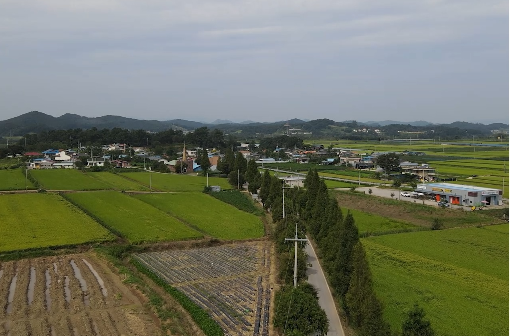
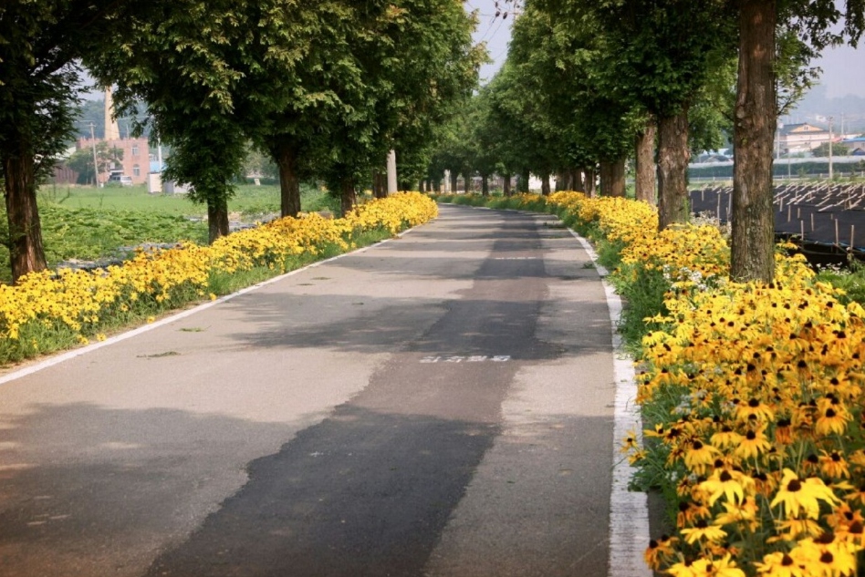

마을 갤러리

사진으로 보는 한배미마을
자연과 사람이 함께 살아온 마을의 이야기를 소개합니다

주월리는 오랜 시간 자연의 흐름과 함께해 온 조용한 농촌 마을입니다. 마을 사람들이 직접 가꿔온 들판과 과수원, 그리고 맑은 물이 흐르는 개울이 사계절 내내 아름다운 풍경을 만들어냅니다.
'한배미마을'이라는 이름으로도 불리는 이곳은 농촌체험휴양마을로 지정된 이후 20년 이상 도시민들에게 자연 속 쉼터를 제공해 왔습니다. 가족 단위 방문객부터 학교 단체 체험까지, 매년 수많은 분들이 이 마을에서 특별한 기억을 만들어가고 있습니다.

마을 곳곳을 잇는 둘레길을 따라 걷다 보면 계절마다 다른 풍경이 펼쳐집니다. 봄에는 꽃이 만발하고, 여름에는 초록빛 나무가 그늘을 만들며, 가을에는 단풍으로 물들고, 겨울에는 고요한 설경이 반깁니다.
아이들과 함께 천천히 걸으며 자연의 변화를 온몸으로 느껴보세요. 바쁜 일상에서 잠시 벗어나 마음의 여유를 찾을 수 있는 공간입니다.